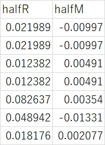
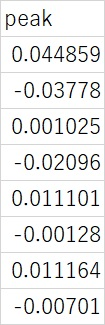

時刻歴データからピーク値計算後、レインフロー計数を行う機能を提供する。原理の詳細は文献[1]を参照のこと。計算結果については、ユーザの責任のもとに利用して下さい。
[1]岡村弘之，板垣 浩著「強度の統計的取り扱い」，培風館， 4.3疲労の安全寿命
最下部の計算実行のセクションで、波形計数処理を行う手順を以下に示す。まずは、次のサンプルデータセクションのデータをダウンロード後に、そのデータについて次の動作確認をしてから利用して下さい。
下記の[サンプルデータ]ボタンをクリックするとサンプルデータwave.csvがダウンロードされます。これを用いて解析した結果がresults.csv,peak.csvと一致することを確認して下さい。
| results.csv | peak.csv |
|  |  |